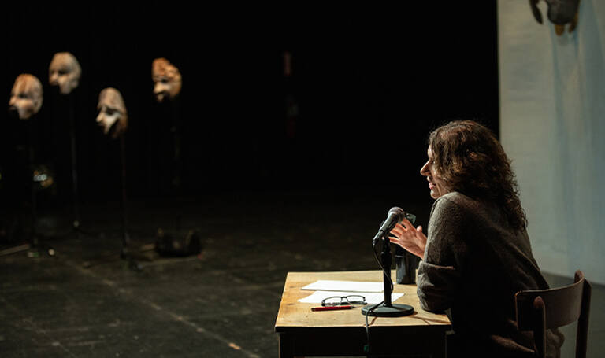

Prometheus Firebringer: Lecture Performance by Annie Dorsen
In ancient Greek mythology, Prometheus stole the gods’ fire to give to humans – sparking sudden and dramatic advances in technology and the arts, and dramatic new sources of conflict. His story is told in the 2,500-year-old Prometheia trilogy attributed to Aeschylus, of which only Prometheus Bound remains in full. In this lecture performance, presented as part of the Neubauer Collegium Director’s Lecture series, Annie Dorsen engages the audience in reflections on power, knowledge, and doubt. Although the explosion of artificial intelligence technology into our daily lives feels unprecedented and new, Dorsen asks if we have been here before. How do we decide to act when we can’t trust our sources? And who do we become in the face of a technology controlled by a select few, especially when its workings remain a mystery?
About the Speaker
Annie Dorsen is a director and writer whose works explore the intersection of algorithmic art and live performance. Her projects have been widely presented in the U.S. and internationally, at major venues and festivals including at Festival d’Automne, the Sharjah Biennial, Holland Festival, Brooklyn Academy of Music, and more. She has written frequently about performance, culture, and technology for The Drama Review, Theatre Magazine, Etcetera, Frakcija, and Performing Arts Journal (PAJ), among others. Dorsen received a 2019 MacArthur Fellowship, a 2018 Guggenheim Fellowship, the 2018 Spalding Gray Award, and the 2014 Herb Alpert Award for the Arts. She is also a 2024 graduate of NYU School of Law, where she focused on tech law and public policy. Currently, she is Guest Curator for Art and Technology at the Brooklyn Academy of Music.
About the Director’s Lecture Series
The Roman Family Director’s Lecture series at the Neubauer Collegium, made possible through the generous support of University of Chicago Trustee Emmanuel Roman, MBA’87, brings distinguished speakers to the University of Chicago to share their insights with faculty, students, and the broader community. The aim of these events is to deepen public knowledge about the world and humanity’s place in it.